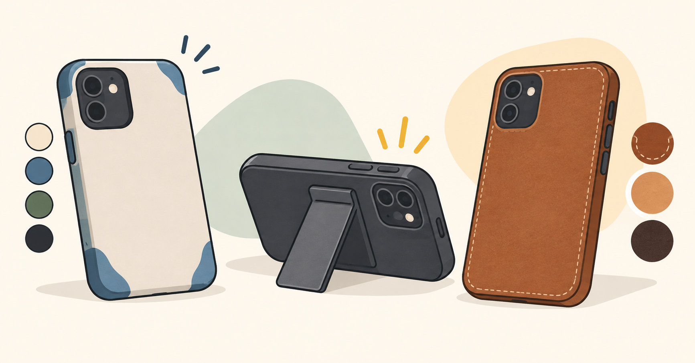
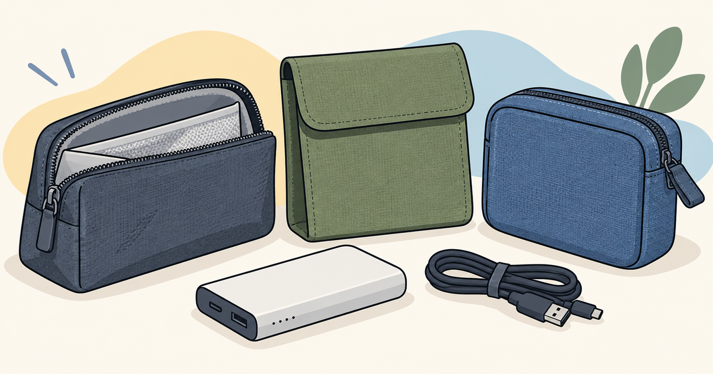
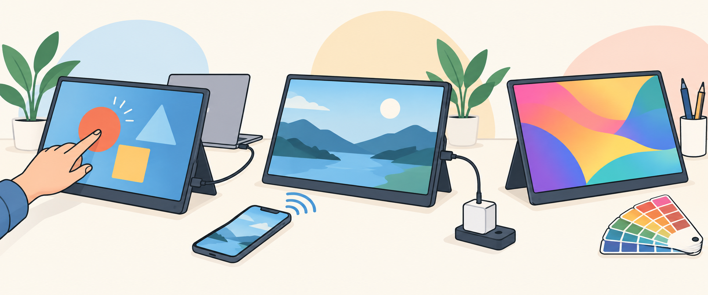
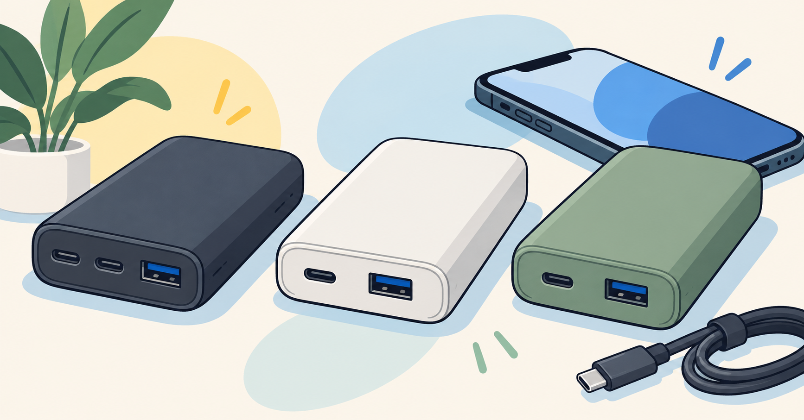

iPhone 18 Pro用ケース3製品比較：配色・スタンド・レザーの違い1733×907 · PNG · 1.50 MB画像を保存 · 記事代替テキスト案：配色を楽しむケース、スタンド付きケース、レザーケースを並べた比較イラスト
モバイルバッテリー用防火ポーチ3製品を比較：仕組みと購入条件1732×908 · PNG · 2.03 MB画像を保存 · 記事代替テキスト案：モバイルバッテリーと、ファスナー式やフラップ式の収納ポーチを並べたイラスト
14型Copilot+ PC比較：NSP・Zenbook UX3480AA・LAVIE BM94C1938×812 · PNG · 1.85 MB画像を保存 · 記事代替テキスト案：薄型ノートパソコン3台を、画面と持ち運びの観点で比較するイラスト
モバイルモニター3機種比較：タッチ・無線接続・制作向け表示の違い1941×810 · PNG · 1.41 MB画像を保存 · 記事代替テキスト案：タッチ操作、無線映像接続、色表示をテーマにしたモバイルモニター3台のイラスト
10,000mAhモバイルバッテリー3製品を比較――出力・端子・購入条件の違い1734×907 · PNG · 1.47 MB画像を保存 · 記事代替テキスト案：端子構成の違うモバイルバッテリー3台とUSBケーブルを並べたイラスト